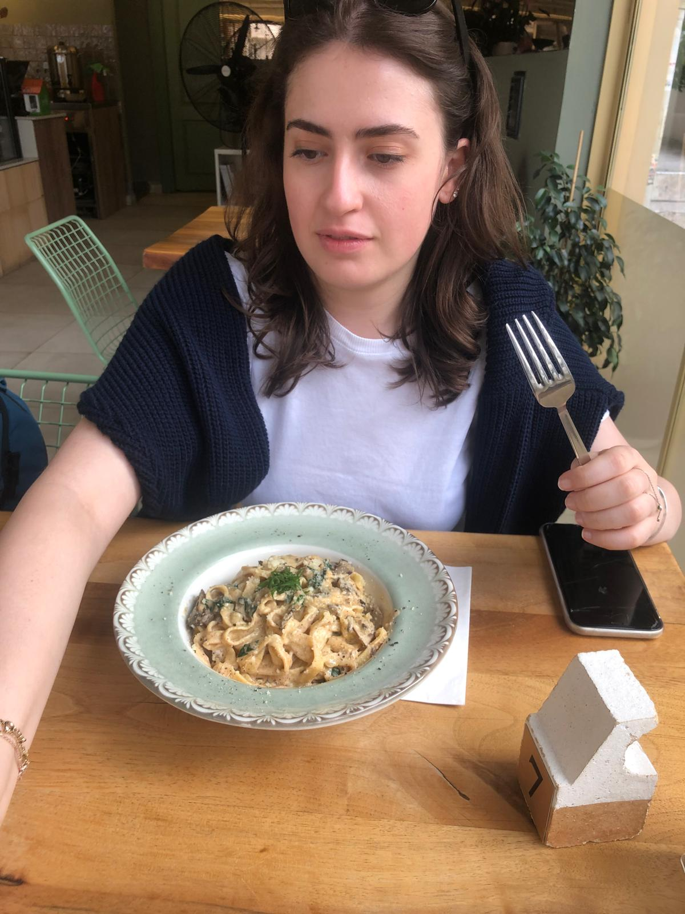
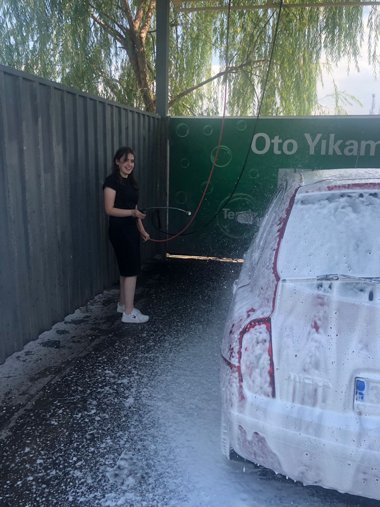
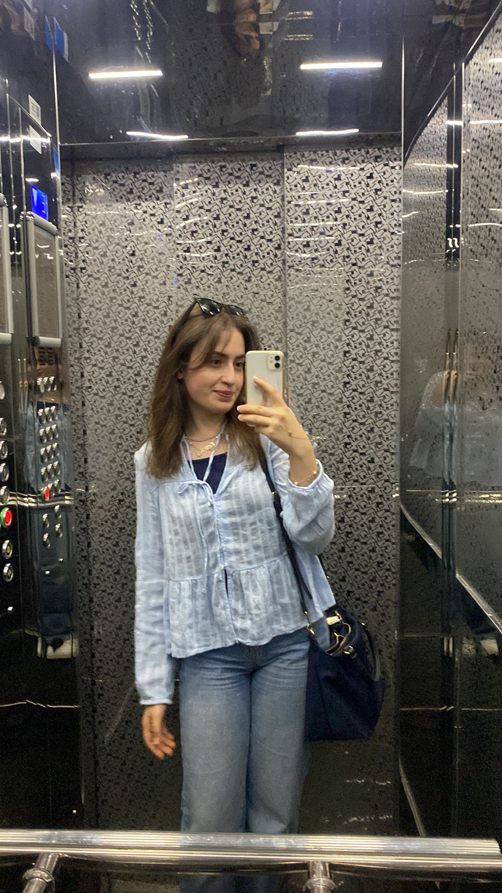
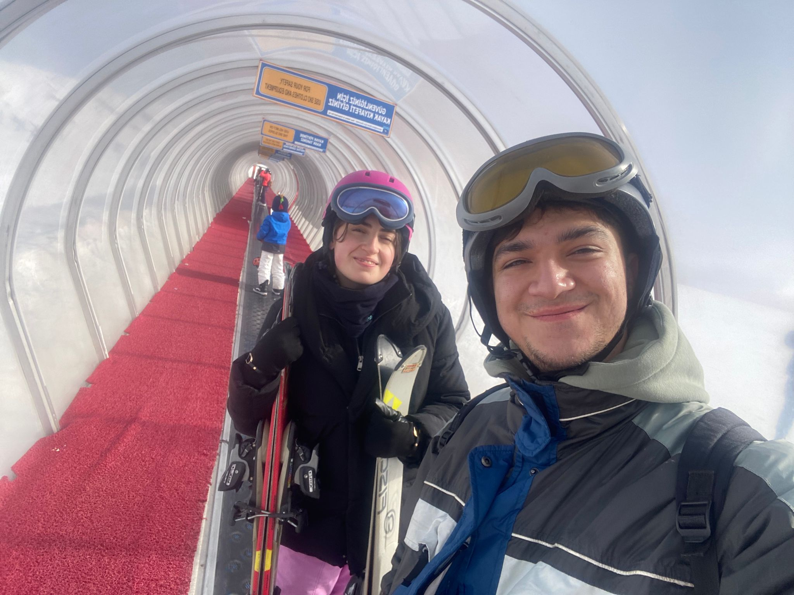
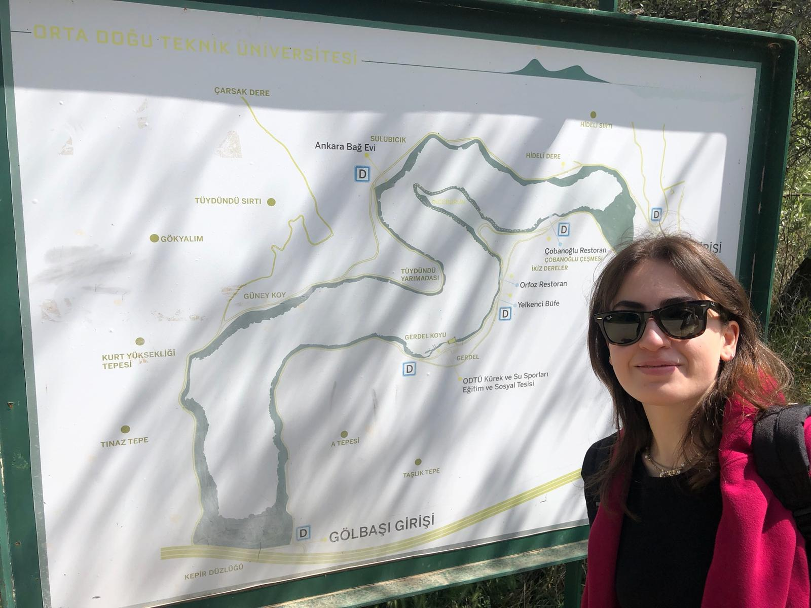

İNCİNAZ ÖZER
Özgeçmiş
İncinaz Özer 2003 Kayseri doğumludur. İlköğretimini ve ortaöğretimini Akansu ve Doğuş Kolejlerinde tamamlamış ardından lise son sınıfa kadar devam edeceği Bahçeşehir Kolejine geçiş yapmıştır. Lise yıllarında okulunda başarılı bir öğrenci olmuştur. İlk girdiği üniversite sınavında kendsine yakışacak bir puan almadığını düşünerek yeniden hazırlanmaya karar vermiştir. Kayseri içerisinde bulunan İstam Koleji Dershanesine yazılmıştır. Bu karar onun hayatını etkileyen en büyük kararlardan biri olmuştur. Dershane döneminde alan değiştirmiş ve her şeye yeniden başlamıştır. Sınıf arkadaşları ona yardım teklif etse de o kendi başına halletmek istemiş ve başarmıştır. Güzel ve başarılı bir dershane döneminin ardından 2. kez üniversite sınavına girmiş ve başarılı bir derece elde etmiştir. Ankara Başkent Üniversitesi Hukuk Fakültesini burslu olarak kazanmış ve istediği başarıyı elde etmiştir. 1 tanesi hazırlık kalan 4 yılı fakülte dönemi olmak üzere hukuk fakültesine başlamış ve şu an 2.sınıfta hala öğretim görmeye devam etmektedir.
İncinaz Özer 1.68 boyunda 58 kilo olup beyaz tenli ela gözlü ve kahverengi düz saç yapısına sahiptir. Genel hatlarıyla baktığımız zaman zarif ve sade bir tarza sahiptir.Doğal görünümlü, açık kahverengi saçları omuz hizasında ve sade bir stil tercih ediyor. Giyim tarzı klasik ve rahat, abartıya kaçmadan şıklığını ortaya koyuyor. Aksesuar takmayı seviyor her iki kol bileğine boynuna ve ayak bileklerine aksesuar kullanmayı sever. İfadesi sıcak ve doğal, bu da samimi bir hava katıyor. Yüz hatları yumuşak, hafif bir gülümsemeyle birlikte kendine güvenen bir duruş sergiliyor. İncinaz Özer karakteristik olarak sakin bir yapıya sahiptir. Narin, zarif ve ince kelimleri tam anlamıyla onu anlatır. Etrafındaki değer ve öenm verdiği insanları düşünür onlara karşı güzel yaklaşımlarda bulunur bu yüzden çevresindeki herkes tarafından sevilen biri olmuştur. Kendisine karşı ısrar edilmesini sevmez hatta nefret eder sebebi karşı taraftaki kişileri kırmak istememesinden kaynaklanır ama yapmak istemediği şeylere de zorlanmak istemez. Sürekli olarak güncel hayatında neşeli bir insan görüntüsü çizer ki öyledirde içi dışı bir olan biridir. Duygusal bir kişiliğe sahiptir. Yaşadığı olaylar onu etkiler ama her zaman karşı tarafı düşünmek için çaba gösterir.
İncinaz Özer Yemekte
İncinaz Özer Araba Yıkıyor
İncinaz Özer Ayna Fotosu
İncinaz Özer Kayakta
İncinaz Özer Gezide
İncinaz Özer Şarkı Söylüyor
Kendisi gayet eğlenceli bir kişilik olup gerek arkadaşlarıyla gerek tek başına eğlenmeyi ve keyif almasını bilir. Hobileri arasında müzik dinlemek, arkadaşları ve sevgilisiyle vakit geçirmek, ailesiyle sohbet etmek, farklı diziler izlemek, alışveriş yapmak vardır. Şarkı dinlemeyi sever ama her zaman değil. Favori sanatçıları:Yalın,Karsu,Tarkan. Türkçe ve Yabancı pop müzik en sevdiği müzik türlerindendir. Gizem, suç, gençlik ve drama dizileri izlemeyi sever. Örneğin Emily in Paris, Good Place, Modern Family. İncinaz Özer'in sevdiği müzik ve dizilere erişmek için aşapıdaki linklere tıklayınız.